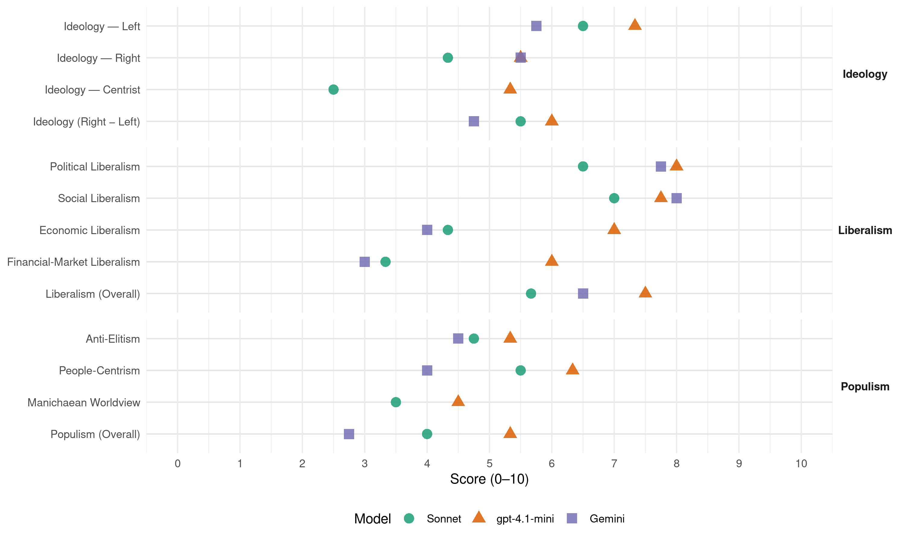

SD (Denmark, 2019)
manifesto_id 13320_201906
Get full text: This site shows derived annotations and short verbatim quotes only. The full manifesto text is © Manifesto Project / WZB — obtain it via manifesto-project.wzb.eu using the manifesto_id above.
Headline scores
| Dimension | Sonnet | gpt-4.1-mini | Gemini |
|---|---|---|---|
| Populism (Overall) | 4.0 | 5.3 | 2.8 |
| Anti-Elitism | 4.8 | 5.3 | 4.5 |
| People-Centrism | 5.5 | 6.3 | 4.0 |
| Manichaean Worldview | 3.5 | 4.5 | – |
| Ideology (Right − Left) | 5.5 | 6.0 | 4.8 |
| Liberalism (Overall) | 5.7 | 7.5 | 6.5 |
| Political Liberalism | 6.5 | 8.0 | 7.8 |
| Social Liberalism | 7.0 | 7.8 | 8.0 |
| Economic Liberalism | 4.3 | 7.0 | 4.0 |
| Financial-Market Liberalism | 3.3 | 6.0 | 3.0 |
Evidence per dimension
Economic Liberalism
Gemini · score 4.0 · verified · chunk 1
“Vi har ikke ladet markedet klare sig selv”
har taget chancer, og som går forrest. Men det har krævet politisk vilje. Vi har ikke ladet markedet klare sig selv. Vi har turdet regulere, og vi
Gemini · score 4.0 · verified · chunk 2
“regulere lønningerne i toppen hårdere”
Vi vil regulere lønningerne i toppen hårdere. Det skal blandt andet ikke være muligt
Gemini · score 5.0 · mixed · chunk 3
“skabe bedre vilkår for private virksomheder”
sætte målrettet ind for at skabe bedre vilkår for private virksomheder. På mange måder går
Gemini · score 4.0 · verified · chunk 4
“imod regeringens ønske om skattelettelser”
kampen op mod skattesvindel og skattely. Samtidig er vi imod regeringens ønske om skattelettelser til dem, der har mest.
gpt-4.1-mini · score 7.0 · verified · chunk 1
“Danske virksomheder er dygtige. Vi nyder godt af et fremsynet dansk erhvervsliv”
Danske lønmodtagere og danske virksomheder er dygtige. Vi nyder godt af et fremsynet dansk erhvervsliv, der har taget chancer, og som går forrest. Men det har krævet politisk vilje.
gpt-4.1-mini · score 7.0 · verified · chunk 2
“Vi har vist, at der ikke behøver at være et modsætningsforhold mellem velfærd og gode vilkår for lønmodtagere på den ene side – og erhvervslivets vilkår og evne til at skabe vækst på den anden side”
Det er ikke kun retfærdigt. Det har også gjort Danmark til et af verdens rigeste samfund. Vi har vist, at der ikke behøver at være et modsætningsforhold mellem velfærd og gode vilkår for lønmodtagere på den ene side – og erhvervslivets vilkår og evne til at skabe vækst på den anden side. Vores opskrift er enkel: Vi har bedt de bredeste skuldre bære de tungeste byrder.
gpt-4.1-mini · score 7.0 · verified · chunk 3
“fri og lige adgang til uddannelse”
Fri og lige adgang til uddannelse betyder, at børnenes muligheder i livet ikke afhænger af deres forældrenes økonomi eller status, men af egen arbejdsindsats og talent.
gpt-4.1-mini · score 7.0 · verified · chunk 4
“Vi ønsker i stedet at samle Danmark og løse de reelle udfordringer, vi står over for.”
Der er samtidig ingenting til pensionisten, mens direktøren kan se frem til en skattelettelse på mindst 26.700 kr. om året. Det er skattelettelser, der trækker Danmark skævt, og som regeringen vil give på bekostning af velfærden. Det er et forkert fokus. Vi ønsker i stedet at samle Danmark og løse de reelle udfordringer, vi står over for.
Sonnet · score 4.0 · verified · chunk 1
“Vi har ikke ladet markedet klare sig selv”
Men det har krævet politisk vilje. Vi har ikke ladet markedet klare sig selv. Vi har turdet regulere, og vi har udvalgt områder, som vi har satset mere på end andre.
Sonnet · score 5.0 · mixed · chunk 2
“kapitalismens entreprenørskab og kraft”
der udvinder de bedste sider af kapitalismens entreprenørskab og kraft. Det er den bedste opskrift på både at skabe økonomisk fremgang.
Sonnet · score 5.0 · verified · chunk 3
“bedre vilkår for private virksomheder”
Hvis dansk økonomi skal fortsætte med at være i vækst, skal vi sætte målrettet ind for at skabe bedre vilkår for private virksomheder. På mange måder går det godt i Danmark i dag.
Sonnet · score 4.0 · verified · chunk 4
“imod regeringens bud på en skattereform”
Derfor er vi imod regeringens bud på en skattereform. Ikke fordi vi have noget imod at lette skatten på arbejde. Men nu og her mener vi, at pengene er bedst brugt på uddannelse
Financial-Market Liberalism
Gemini · score 3.0 · verified · chunk 2
“ny skat på finansielle transaktioner”
Blandt andet foreslår vi en europæisk bund under selskabsskatten, en ny skat på finansielle transaktioner og en ny skat på IT-giganter.
gpt-4.1-mini · score 6.0 · verified · chunk 1
“PSO-aftalen”
De forslag til et bedre klima, som vi præsenterer i dette udspil, finansieres af den ramme, som Socialdemokratiet aftalte med regeringen for halvandet år siden i forbindelse med PSO-aftalen.
gpt-4.1-mini · score 6.0 · verified · chunk 2
“Selskabsskatten, en ny skat på finansielle transaktioner og en ny skat på IT-giganter”
Derfor fremlægger vi også en række initiativer, der skal styrke den internationale indsats mod stigende ulighed. Blandt andet foreslår vi en europæisk bund under selskabsskatten, en ny skat på finansielle transaktioner og en ny skat på IT-giganter.
Sonnet · score 3.0 · verified · chunk 2
“en ny skat på finansielle transaktioner”
Blandt andet foreslår vi en europæisk bund under selskabsskatten, en ny skat på finansielle transaktioner og en ny skat på IT-giganter.
Sonnet · score 4.0 · verified · chunk 3
“Ansvarlig kapital til små og mellemstore virksomheder”
Veje til vækst: Ansvarlig kapital til små og mellemstore virksomheder. Opkvalificeringsreform: Flere faglærte – nye arbejdspladser. Flaskehalsudspil: Flere medarbejder til et Danmark i vækst.
Sonnet · score 3.0 · verified · chunk 4
“bekæmpe skattely og skattespekulation”
Socialdemokratiet mener, at der skal slås hårdt ned på skattesvindel. Derfor har vi fremlagt en skattelypakke med konkrete bud på, hvordan vi vil bekæmpe skattely og skattespekulation.
Political Liberalism
Gemini · score 8.0 · verified · chunk 1
“religion altid er underordnet vores demokrati”
kamp for vores demokrati. Og for at religion altid er underordnet vores demokrati. Integrationspolitikken er også en kamp for
Gemini · score 7.0 · verified · chunk 2
“reformer handlede om at udbygge det danske velfærdssamfund og give borgerne flere rettigheder”
Der var engang, hvor reformer handlede om at udbygge det danske velfærdssamfund og give borgerne flere rettigheder.
Gemini · score 8.0 · verified · chunk 3
“central del af det danske demokrati”
foreningslivet er en central del af det danske demokrati, og derfor ønsker Socialdemokratiet
Gemini · score 8.0 · verified · chunk 4
“religion altid er underordnet demokratiet”
mellem kønnene skal også gælde for dem. Ret og pligt. At religion altid er underordnet demokratiet. Det kræver et opgør med
gpt-4.1-mini · score 8.0 · verified · chunk 1
“fri og lige adgang til sundhed”
Det fantastiske er, at det ikke kun er retfærdigt. Det har også gjort os til et af verdens rigeste lande. Med fri og lige adgang til sundhed. Skolegang og SU. Folkepension og ældrepleje.
gpt-4.1-mini · score 8.0 · verified · chunk 2
“Vores samfund bygger på tillid Derfor tør vi gå sammen om de store opgaver: fødestuer, folkeskoler, folkepension”
Vores samfund bygger på tillid Derfor tør vi gå sammen om de store opgaver: fødestuer, folkeskoler, folkepension. Om børnene og bedsteforældrene. Og om hinanden. De fleste får den rette hjælp. En ordentlig behandling, hvis man bliver syg eller mister sit arbejde.
gpt-4.1-mini · score 8.0 · verified · chunk 3
“fri og lige adgang til uddannelse”
Fri og lige adgang til uddannelse betyder, at børnenes muligheder i livet ikke afhænger af deres forældrenes økonomi eller status, men af egen arbejdsindsats og talent.
gpt-4.1-mini · score 8.0 · verified · chunk 4
“Vi insisterer på, at man som borger i Danmark skal kunne føle sig tryg – uanset hvem man er, og hvor man bor.”
Retspolitik Tryghed i hele Danmark. Vi insisterer på, at man som borger i Danmark skal kunne føle sig tryg – uanset hvem man er, og hvor man bor. Retspolitik: Et synligt og nærværende politi i hele landet Vi skal have et nærværende politi, der er synligt, tilgængeligt og rykker hurtigt ud.
Sonnet · score 7.0 · verified · chunk 1
“demokrati altid står over religion”
Der er brug for en frihedskamp, hvor demokrati altid står over religion. Og en målrettet indsats mod social kontrol og parallelsamfund.
Sonnet · score 7.0 · verified · chunk 2
“Det er et politisk ansvar”
Det er et politisk ansvar at indføre den nye rettighed. Det vil Socialdemokratiet stille sig i spidsen for at søge opbakning til.
Sonnet · score 6.0 · verified · chunk 3
“religion altid er underordnet demokratiet”
Ligestilling mellem kønnene skal også gælde for dem. Ret og pligt. At religion altid er underordnet demokratiet. Det kræver et opgør med de normer, der eksisterer i dele af Danmark.
Sonnet · score 6.0 · verified · chunk 4
“at religion altid er underordnet demokratiet”
Den nye frihedskamp I dag står vi over for et nyt kapitel i ligestillingens frihedskamp: De nye danskere. Ret og pligt. At religion altid er underordnet demokratiet.
Liberalism (Overall)
Gemini · score 6.0 · verified · chunk 1
“religion altid er underordnet vores demokrati”
kamp for vores demokrati. Og for at religion altid er underordnet vores demokrati. Integrationspolitikken er også en kamp for
Gemini · score 6.0 · verified · chunk 2
“reformer handlede om at udbygge det danske velfærdssamfund og give borgerne flere rettigheder”
Der var engang, hvor reformer handlede om at udbygge det danske velfærdssamfund og give borgerne flere rettigheder.
Gemini · score 7.0 · verified · chunk 3
“mænd og kvinder har reelt lige muligheder”
et samfund, hvor mænd og kvinder har reelt lige muligheder, og hvor alle, uanset
Gemini · score 7.0 · verified · chunk 4
“mænd og kvinder har reelt lige muligheder”
Ligestilling Lige muligheder Vi ønsker et samfund, hvor mænd og kvinder har reelt lige muligheder, og hvor alle, uanset køn
gpt-4.1-mini · score 7.0 · verified · chunk 1
“fri og lige adgang til sundhed”
Det fantastiske er, at det ikke kun er retfærdigt. Det har også gjort os til et af verdens rigeste lande. Med fri og lige adgang til sundhed. Skolegang og SU. Folkepension og ældrepleje.
gpt-4.1-mini · score 7.0 · verified · chunk 2
“Vores samfund bygger på tillid Derfor tør vi gå sammen om de store opgaver: fødestuer, folkeskoler, folkepension”
Vores samfund bygger på tillid Derfor tør vi gå sammen om de store opgaver: fødestuer, folkeskoler, folkepension. Om børnene og bedsteforældrene. Og om hinanden. De fleste får den rette hjælp. En ordentlig behandling, hvis man bliver syg eller mister sit arbejde.
gpt-4.1-mini · score 8.0 · verified · chunk 3
“fri og lige adgang til uddannelse”
Fri og lige adgang til uddannelse betyder, at børnenes muligheder i livet ikke afhænger af deres forældrenes økonomi eller status, men af egen arbejdsindsats og talent.
gpt-4.1-mini · score 8.0 · verified · chunk 4
“Vi insisterer på, at man som borger i Danmark skal kunne føle sig tryg – uanset hvem man er, og hvor man bor.”
Retspolitik Tryghed i hele Danmark. Vi insisterer på, at man som borger i Danmark skal kunne føle sig tryg – uanset hvem man er, og hvor man bor. Retspolitik: Et synligt og nærværende politi i hele landet Vi skal have et nærværende politi, der er synligt, tilgængeligt og rykker hurtigt ud.
Sonnet · score 6.0 · verified · chunk 1
“fri og lige adgang til sundhed”
Med fri og lige adgang til sundhed. Skolegang og SU. Folkepension og ældrepleje. Hvor de bredeste skuldre bærer de tungeste byrder.
Sonnet · score 6.0 · mixed · chunk 2
“vækstskabende erhvervspolitik”
styrke den socialdemokratiske ligning mellem tryghed, tillid og retfærdighed på den ene side – og en vækstskabende erhvervspolitik på den anden side.
Sonnet · score 6.0 · verified · chunk 3
“mænd og kvinder har reelt lige muligheder”
Vi ønsker et samfund, hvor mænd og kvinder har reelt lige muligheder, og hvor alle, uanset køn, har de samme gode muligheder for at udleve deres potentiale og leve de liv, de ønsker.
Sonnet · score 5.0 · verified · chunk 4
“Ligestilling er grundlæggende et spørgsmål om frihed”
Hvad er ligestilling? Ligestilling er grundlæggende et spørgsmål om frihed og lige muligheder. Det handler om at give stadig flere mennesker muligheden for at forme deres eget liv.
Anti-Elitism
Gemini · score 4.0 · verified · chunk 1
“Politikerne skal styre mindre og lede mere”
At gøre en forskel for danskerne. Politikerne skal styre mindre og lede mere, mens medarbejderne og lederne skal have
Gemini · score 5.0 · verified · chunk 2
“skandalerne i banker og problemerne i SKAT”
Sammen med finanskrisen og senest skandalerne i banker og problemerne i SKAT har det udfordret vores samfundskontrakt.
Gemini · score 4.0 · verified · chunk 3
“underlagt en regnearkstankegang”
muligheder med andre ord underlagt en regnearkstankegang. I Socialdemokratiet har vi
Gemini · score 5.0 · verified · chunk 4
“Det er resultatet af politiske beslutninger”
ikke resultatet af en ustoppelig international urbanisering. Det er resultatet af politiske beslutninger. Beslutninger taget med åbne øjne.
gpt-4.1-mini · score 6.0 · verified · chunk 1
“De borgerlige partier ville have råd til at sænke skatten”
Der er gået tre år med nedskæringer og forringelser, fordi de borgerlige partier ville have råd til at sænke skatten. Skal vi ikke prøve noget nyt? Styrke vores fælles velfærd – i stedet for svække den.
gpt-4.1-mini · score 7.0 · verified · chunk 2
“når få i toppen stikker af fra resten”
Det er mange år siden, at John Mogensen sang om Dybbøl Mølle, der maler helt af helvede til: ”Bare tegnedrengen er i orden, kan man få det, som man vil”. Det er som om, det er mere aktuelt end nogensinde før. Når få i toppen stikker af fra resten. Når nogle store banker svigter deres samfundsansvar.
gpt-4.1-mini · score 3.0 · verified · chunk 4
“Det er resultatet af politiske beslutninger. Beslutninger taget med åbne øjne.”
Det er – trods alt – ikke resultatet af en ustoppelig international urbanisering. Det er resultatet af politiske beslutninger. Beslutninger taget med åbne øjne. Og særligt én politiker har mere end nogen anden ansvaret.
Sonnet · score 4.0 · verified · chunk 1
“de borgerlige partier ville have råd til at sænke skatten”
Der er gået tre år med nedskæringer og forringelser, fordi de borgerlige partier ville have råd til at sænke skatten. Skal vi ikke prøve noget nyt?
Sonnet · score 5.0 · verified · chunk 2
“nogle store banker svigter deres samfundsansvar”
Når få i toppen stikker af fra resten. Når nogle store banker svigter deres samfundsansvar. Når myndighederne sover i timen.
Sonnet · score 4.0 · verified · chunk 3
“De rige er blevet rigere, lønmodtageren er blevet ladt i stikken”
Markedet er ikke bare blevet sat fri, det er løbet løbsk. Resultatet har været social dumping, unfair konkurrence og et ræs mod bunden på selskabsskatten. De rige er blevet rigere, lønmodtageren er blevet ladt i stikken, og almindelige menneskers arbejdsvilkår og velfærd er under pres.
Sonnet · score 6.0 · verified · chunk 4
“Hans navn er Lars Løkke Rasmussen”
Og særligt én politiker har mere end nogen anden ansvaret. Hans navn er Lars Løkke Rasmussen. Som indenrigsminister stod han bag kommunalreformen
Ideology — Centrist
gpt-4.1-mini · score 6.0 · verified · chunk 1
“En udlændingepolitik, der samler Danmark”
Socialdemokratiet står for en udlændingepolitik, der både er retfærdig og realistisk. En udlændingepolitik, der samler Danmark.
gpt-4.1-mini · score 5.0 · verified · chunk 2
“Det er mange år siden, at John Mogensen sang om Dybbøl Mølle, der maler helt af helvede til”
Det er mange år siden, at John Mogensen sang om Dybbøl Mølle, der maler helt af helvede til: ”Bare tegnedrengen er i orden, kan man få det, som man vil”. Det er som om, det er mere aktuelt end nogensinde før. Når få i toppen stikker af fra resten.
gpt-4.1-mini · score 5.0 · verified · chunk 4
“Vi vil samle Danmark igen. Ligestilling Lige muligheder”
Og fordi vi tror på, at vi sammen kan tage skeen i den anden hånd og forme fremtiden selv. Lad os samle Danmark igen. Ligestilling Lige muligheder Vi ønsker et samfund, hvor mænd og kvinder har reelt lige muligheder,
Sonnet · score 3.0 · verified · chunk 1
“en udlændingepolitik, der samler Danmark”
Danmark har ikke brug for den blokpolitik og splittelse. Tværtimod. Socialdemokratiet står for en udlændingepolitik, der samler Danmark.
Sonnet · score 2.0 · verified · chunk 2
“styrke den socialdemokratiske ligning”
Der er et politisk valg: Hvor vi bør vælge at styrke den socialdemokratiske ligning mellem tryghed, tillid og retfærdighed på den ene side.
Sonnet · score 2.0 · verified · chunk 3
“et rigere, mere lige og retfærdigt Danmark”
Hvis vi fører den rigtige finanspolitik, har vi muligheden for at skabe et rigere, mere lige og retfærdigt Danmark. Økonomien er i fremgang, virksomhederne klarer sig bedre, flere er i arbejde.
Sonnet · score 3.0 · verified · chunk 4
“Vi vil skabe en ny udvikling”
Jer, der kæmper for et Danmark i balance – I har fortjent en regering, der vil hele Danmark. Vi vil skabe en ny udvikling.
Ideology — Left
Gemini · score 6.0 · verified · chunk 1
“Spar på velfærd og uddannelse for at få råd til topskattelettelser”
Lars Løkke Rasmussen kun betale for den ene. Han har et klart projekt: Spar på velfærd og uddannelse for at få råd til topskattelettelser. Socialdemokratiet mener, at vores velfærd
Gemini · score 7.0 · verified · chunk 2
“de bredeste skuldre bærer de tungeste byrder”
17 tiltag til et mere retfærdigt samfund, hvor de bredeste skuldre bærer de tungeste byrder.
Gemini · score 4.0 · verified · chunk 3
“give store skattelettelser særligt til dem”
vores fælles opsparing på at give store skattelettelser særligt til dem, der i forvejen har
Gemini · score 6.0 · verified · chunk 4
“skattelettelser til dem, der har mest”
skattesvindel og skattely. Samtidig er vi imod regeringens ønske om skattelettelser til dem, der har mest. Skattepolitik: Dyre skattelettelser
gpt-4.1-mini · score 7.0 · verified · chunk 1
“Spar på velfærd og uddannelse for at få råd til topskattelettelser”
Han har et klart projekt: Spar på velfærd og uddannelse for at få råd til topskattelettelser. Socialdemokratiet mener, at vores velfærd skal kunne følge med, når flere får brug for den.
gpt-4.1-mini · score 8.0 · verified · chunk 2
“Vi vil regulere lønningerne i toppen hårdere. Det skal blandt andet ikke være muligt, at meget høje lønninger kan trækkes fra i virksomhedernes regnskab”
Derfor foreslår Socialdemokratiet nu en række initiativer, der skal øge retfærdigheden i Danmark. Og samtidig modvirke den udvikling, der ellers underminerer vores tillid og sammenhængskraft. Vi vil regulere lønningerne i toppen hårdere. Det skal blandt andet ikke være muligt, at meget høje lønninger kan trækkes fra i virksomhedernes regnskab, som det ellers er muligt i dag.
gpt-4.1-mini · score 7.0 · verified · chunk 4
“Vi er imod regeringens ønske om skattelettelser til dem, der har mest.”
Vi tager kampen op mod skattesvindel og skattely. Samtidig er vi imod regeringens ønske om skattelettelser til dem, der har mest. Skattepolitik: Dyre skattelettelser er ikke det, Danmark har brug for Regeringen vil give store skattelettelser særligt til dem, der i forvejen har mest.
Sonnet · score 6.0 · verified · chunk 1
“styrke vores fælles velfærd”
Socialdemokratiet vil styrke vores fælles velfærd. Mere tid til ældre, børn og borgere. Velfærd binder Danmark sammen.
Sonnet · score 7.0 · verified · chunk 2
“Højere skat på store formueindkomster”
Vi vil øge skatten på indkomster fra formue… Socialdemokratiet foreslår: Lønningerne i toppen skal reguleres hårdere… Højere skat på store formueindkomster.
Sonnet · score 6.0 · verified · chunk 3
“investere i uddannelse, velfærd og arbejdspladser”
En ansvarlig og retfærdig økonomisk politik i Danmark anno 2019 er investeringer i uddannelse, velfærd og arbejdspladser i hele landet. Vi vil blandt andet styrke velfærden, så den kan følge med, når vi bliver flere ældre og børn de kommende år.
Sonnet · score 7.0 · verified · chunk 4
“skattelettelser til dem, der har mest”
Vi er imod regeringens ønske om skattelettelser til dem, der har mest. Skattepolitik: Dyre skattelettelser er ikke det, Danmark har brug for
Ideology (Right − Left)
Gemini · score 5.0 · verified · chunk 1
“loft for, hvor mange nye ikke-vestlige udlændinge”
Danmark skal have kontrollen igen. Vi vil indføre et loft for, hvor mange nye ikke-vestlige udlændinge der kan komme til Danmark på et år.
Gemini · score 6.0 · verified · chunk 2
“de bredeste skuldre bærer de tungeste byrder”
17 tiltag til et mere retfærdigt samfund, hvor de bredeste skuldre bærer de tungeste byrder.
Gemini · score 3.0 · verified · chunk 3
“give store skattelettelser særligt til dem”
vores fælles opsparing på at give store skattelettelser særligt til dem, der i forvejen har
Gemini · score 5.0 · verified · chunk 4
“skattelettelser til dem, der har mest”
skattesvindel og skattely. Samtidig er vi imod regeringens ønske om skattelettelser til dem, der har mest. Skattepolitik: Dyre skattelettelser
gpt-4.1-mini · score 6.0 · verified · chunk 1
“Socialdemokratiet står for en udlændingepolitik, der både er retfærdig og realistisk”
Socialdemokratiet står for en udlændingepolitik, der både er retfærdig og realistisk. En udlændingepolitik, der samler Danmark.
gpt-4.1-mini · score 6.0 · verified · chunk 2
“Vi vil regulere lønningerne i toppen hårdere. Det skal blandt andet ikke være muligt, at meget høje lønninger kan trækkes fra i virksomhedernes regnskab”
Derfor foreslår Socialdemokratiet nu en række initiativer, der skal øge retfærdigheden i Danmark. Og samtidig modvirke den udvikling, der ellers underminerer vores tillid og sammenhængskraft. Vi vil regulere lønningerne i toppen hårdere. Det skal blandt andet ikke være muligt, at meget høje lønninger kan trækkes fra i virksomhedernes regnskab, som det ellers er muligt i dag.
gpt-4.1-mini · score 6.0 · verified · chunk 4
“Det er resultatet af politiske beslutninger. Beslutninger taget med åbne øjne.”
Det er – trods alt – ikke resultatet af en ustoppelig international urbanisering. Det er resultatet af politiske beslutninger. Beslutninger taget med åbne øjne. Og særligt én politiker har mere end nogen anden ansvaret.
Sonnet · score 5.0 · verified · chunk 1
“retfærdig og realistisk”
Socialdemokratiet står for en udlændingepolitik, der både er retfærdig og realistisk. En udlændingepolitik, der samler Danmark.
Sonnet · score 6.0 · verified · chunk 2
“anti-corporate elite, redistribution”
Vi vil regulere lønningerne i toppen hårdere… Vi vil øge skatten på indkomster fra formue… Arveafgiften skal målrettes meget store arvesummer.
Sonnet · score 5.0 · verified · chunk 3
“investere i uddannelse, velfærd og arbejdspladser”
En ansvarlig og retfærdig økonomisk politik i Danmark anno 2019 er investeringer i uddannelse, velfærd og arbejdspladser i hele landet.
Sonnet · score 6.0 · verified · chunk 4
“opgør med skattely og skattespekulation”
Socialdemokratiet mener, at der skal slås hårdt ned på skattesvindel. Derfor har vi fremlagt en skattelypakke med konkrete bud på, hvordan vi vil bekæmpe skattely og skattespekulation.
Ideology — Right
Gemini · score 6.0 · verified · chunk 1
“loft for, hvor mange nye ikke-vestlige udlændinge”
Danmark skal have kontrollen igen. Vi vil indføre et loft for, hvor mange nye ikke-vestlige udlændinge der kan komme til Danmark på et år.
Gemini · score 5.0 · verified · chunk 4
“kriminelle udlændinge skal afsone i hjemlandet”
Kriminelle udlændinge I Socialdemokratiet mener vi, at flere kriminelle udlændinge skal afsone i hjemlandet. D e seneste par år
gpt-4.1-mini · score 5.0 · verified · chunk 1
“En 10-årsplan skal sikre, at ingen boligområder, skoler eller uddannelsesinstitutioner i fremtiden har mere end 30 pct. ikke-vestlige indvandrere”
En 10-årsplan skal sikre, at ingen boligområder, skoler eller uddannelsesinstitutioner i fremtiden har mere end 30 pct. ikke-vestlige indvandrere og efterkommere. Og flere skal bidrage til det danske samfund.
gpt-4.1-mini · score 6.0 · verified · chunk 4
“Kriminelle udlændinge skal ikke afsone for danske skattekroner. De skal sendes hjem.”
Kriminelle udlændinge skal ikke afsone for danske skattekroner. De skal sendes hjem. Reglerne for udvisning af kriminelle udlændinge skal strammes. Kriminelle udlændinge skal ikke bare have advarsler og betingede udvisninger. De skal udvises ved første dom.
Sonnet · score 5.0 · verified · chunk 1
“loft for, hvor mange nye ikke-vestlige udlændinge”
Vi vil indføre et loft for, hvor mange nye ikke-vestlige udlændinge der kan komme til Danmark på et år.
Sonnet · score 4.0 · verified · chunk 3
“Flere ikke-vestlige indvandrere skal i arbejde”
Højere beskæftigelse blandt nye danskere. Flere ikke-vestlige indvandrere skal i arbejde. I dag står hver anden i den arbejdsdygtige alder uden for arbejdsmarkedet.
Sonnet · score 4.0 · verified · chunk 4
“Kriminelle udlændinge skal ikke afsone”
Kriminelle udlændinge skal ikke afsone for danske skattekroner. De skal sendes hjem. Reglerne for udvisning af kriminelle udlændinge skal strammes.
Manichaean Worldview
gpt-4.1-mini · score 5.0 · mixed · chunk 1
“Spar på velfærd og uddannelse for at få råd til topskattelettelser”
Han har et klart projekt: Spar på velfærd og uddannelse for at få råd til topskattelettelser. Socialdemokratiet mener, at vores velfærd skal kunne følge med, når flere får brug for den.
gpt-4.1-mini · score 5.0 · verified · chunk 2
“Når få i toppen stikker af fra resten. Når nogle store banker svigter deres samfundsansvar”
Det er mange år siden, at John Mogensen sang om Dybbøl Mølle, der maler helt af helvede til: ”Bare tegnedrengen er i orden, kan man få det, som man vil”. Det er som om, det er mere aktuelt end nogensinde før. Når få i toppen stikker af fra resten. Når nogle store banker svigter deres samfundsansvar. Når myndighederne sover i timen.
gpt-4.1-mini · score 4.0 · verified · chunk 4
“Det er ikke en kamp mellem land og by. Det skaber ikke mere liv i de små samfund, at regeringen skælder ud på København.”
Det er ikke en kamp mellem land og by. Det skaber ikke mere liv i de små samfund, at regeringen skælder ud på København. Regeringen bryster sig af, at en række statslige arbejdspladser er blevet bedre fordelt.
Sonnet · score 3.0 · verified · chunk 1
“Han har et klart projekt: Spar på velfærd”
For hver gang vi bliver to ældre flere, vil Lars Løkke Rasmussen kun betale for den ene. Han har et klart projekt: Spar på velfærd og uddannelse for at få råd til topskattelettelser.
Sonnet · score 3.0 · verified · chunk 2
“få i toppen stikker af fra resten”
Det handler ikke kun om, at nogle få mennesker tjener meget mere end andre. Men at store dele af befolkningerne… Når få i toppen stikker af fra resten.
Sonnet · score 3.0 · verified · chunk 3
“Venstre ser igennem fingre med social dumping”
Venstre, De Konservative og Liberal Alliance ser igennem fingre med social dumping. Det vil vi ikke. Vi foreslår konkret markant større bøder, flere razziaer, kædeansvar for virksomhederne.
Sonnet · score 5.0 · verified · chunk 4
“trækker Danmark skævt”
Det er skattelettelser, der trækker Danmark skævt, og som regeringen vil give på bekostning af velfærden. Det er et forkert fokus.
People-Centrism
Gemini · score 5.0 · verified · chunk 1
“være tæt på danskerne”
God velfærd kommer af at være tæt på danskerne. Hvis vi vil have bedre velfærd, skal
Gemini · score 3.0 · verified · chunk 3
“De mennesker, som har skabt Danmark”
Socialdemokratiets ældrepolitik. De mennesker, som har skabt Danmark, skal have en værdig
Gemini · score 4.0 · verified · chunk 4
“længere væk fra borgerne”
Skat. Større og færre enheder, længere væk fra borgerne. Med kommunalreformen ville vi
gpt-4.1-mini · score 7.0 · verified · chunk 1
“Velfærd binder Danmark sammen”
Velfærd Velfærd først. Socialdemokratiet vil styrke vores fælles velfærd. Mere tid til ældre, børn og borgere. Velfærd binder Danmark sammen Det næste folketingsvalg i Danmark handler om velfærd.
gpt-4.1-mini · score 6.0 · verified · chunk 2
“Vi har bygget et samfund, hvor få har for meget, og færre for lidt”
Vores samfund bygger på tillid Derfor tør vi gå sammen om de store opgaver: fødestuer, folkeskoler, folkepension. Om børnene og bedsteforældrene. Og om hinanden. De fleste får den rette hjælp. En ordentlig behandling, hvis man bliver syg eller mister sit arbejde. Muligheder, uanset hvem man er, hvor man kommer fra og hvor man bor. Og vores samfund baserer sig på en relativ stor lighed. Vi har bygget et samfund, hvor få har for meget, og færre for lidt.
gpt-4.1-mini · score 6.0 · verified · chunk 4
“Vi vil samle Danmark igen. Ligestilling Lige muligheder”
Og fordi vi tror på, at vi sammen kan tage skeen i den anden hånd og forme fremtiden selv. Lad os samle Danmark igen. Ligestilling Lige muligheder Vi ønsker et samfund, hvor mænd og kvinder har reelt lige muligheder,
Sonnet · score 6.0 · verified · chunk 1
“Vi løser de store opgaver i fællesskab”
Velfærd skaber tryghed og muligheder for den enkelte og binder os sammen. Vi løser de store opgaver i fællesskab.
Sonnet · score 6.0 · verified · chunk 2
“vi tager hånd om hinanden”
Vores unikke samfundsmodel. Hvor de stærke forpligtende fællesskaber er en bærende værdi. Hvor vi tager hånd om hinanden.
Sonnet · score 4.0 · verified · chunk 3
“almindelige lønmodtagere fortsat skal have råd”
Socialdemokratiets vigtigste prioriteter er derfor, at almindelige lønmodtagere fortsat skal have råd til at bo i de største byer, og at der ikke eksisterer parallelsamfund med andre grundlæggende værdier.
Sonnet · score 6.0 · verified · chunk 4
“Lad os samle Danmark igen”
Fordi vi tror på, at vi sammen kan tage skeen i den anden hånd og forme fremtiden selv. Lad os samle Danmark igen.
Populism (Overall)
Gemini · score 3.0 · verified · chunk 1
“være tæt på danskerne”
God velfærd kommer af at være tæt på danskerne. Hvis vi vil have bedre velfærd, skal
Gemini · score 2.0 · verified · chunk 2
“skandalerne i banker og problemerne i SKAT”
Sammen med finanskrisen og senest skandalerne i banker og problemerne i SKAT har det udfordret vores samfundskontrakt.
Gemini · score 3.0 · verified · chunk 3
“underlagt en regnearkstankegang”
muligheder med andre ord underlagt en regnearkstankegang. I Socialdemokratiet har vi
Gemini · score 3.0 · verified · chunk 4
“Det er resultatet af politiske beslutninger”
ikke resultatet af en ustoppelig international urbanisering. Det er resultatet af politiske beslutninger. Beslutninger taget med åbne øjne.
gpt-4.1-mini · score 6.0 · verified · chunk 1
“De borgerlige partier ville have råd til at sænke skatten”
Der er gået tre år med nedskæringer og forringelser, fordi de borgerlige partier ville have råd til at sænke skatten. Skal vi ikke prøve noget nyt? Styrke vores fælles velfærd – i stedet for svække den.
gpt-4.1-mini · score 6.0 · verified · chunk 2
“Når få i toppen stikker af fra resten. Når nogle store banker svigter deres samfundsansvar”
Det er mange år siden, at John Mogensen sang om Dybbøl Mølle, der maler helt af helvede til: ”Bare tegnedrengen er i orden, kan man få det, som man vil”. Det er som om, det er mere aktuelt end nogensinde før. Når få i toppen stikker af fra resten. Når nogle store banker svigter deres samfundsansvar. Når myndighederne sover i timen.
gpt-4.1-mini · score 4.0 · verified · chunk 4
“Det er resultatet af politiske beslutninger. Beslutninger taget med åbne øjne.”
Det er – trods alt – ikke resultatet af en ustoppelig international urbanisering. Det er resultatet af politiske beslutninger. Beslutninger taget med åbne øjne. Og særligt én politiker har mere end nogen anden ansvaret.
Sonnet · score 4.0 · verified · chunk 1
“Spar på velfærd og uddannelse”
Han har et klart projekt: Spar på velfærd og uddannelse for at få råd til topskattelettelser. Socialdemokratiet mener, at vores velfærd skal kunne følge med.
Sonnet · score 4.0 · verified · chunk 2
“de bredeste skuldre bærer de tungeste byrder”
17 tiltag til et mere retfærdigt samfund, hvor de bredeste skuldre bærer de tungeste byrder.
Sonnet · score 3.0 · verified · chunk 3
“De rige er blevet rigere, lønmodtageren er blevet ladt i stikken”
Markedet er ikke bare blevet sat fri, det er løbet løbsk. Resultatet har været social dumping, unfair konkurrence og et ræs mod bunden på selskabsskatten. De rige er blevet rigere, lønmodtageren er blevet ladt i stikken, og almindelige menneskers arbejdsvilkår og velfærd er under pres.
Sonnet · score 5.0 · verified · chunk 4
“Jer, der kæmper for et Danmark i balance”
Jer, der kæmper for et Danmark i balance – I har fortjent en regering, der vil hele Danmark. Vi vil skabe en ny udvikling.
Social Liberalism